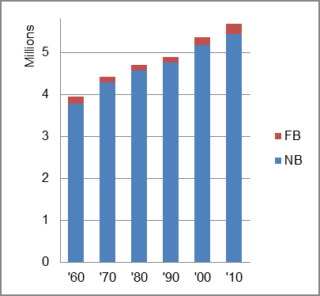

The foreign-born (FB) population increased from 171,519 in 1960 to 254,920 in 2010. That was an increase of 48.6 percent. The foreign-born share increased from 4.3 percent in 1960 to 4.5 percent.
The share of the overall population that was native-born (NB) increased by 43.7 percent.
Wisconsin: Population 1960-2010 
The first chart below shows the three population change factors for three periods adjusted for annual average amounts. The largest factor contributing to population increase was B-D in all periods.
The second chart shows the same data but with an adjustment to reflect births to immigrants shifted to NIM. In it, B-D remained the main factor in adding population in all periods.
Wisconsin: Sources of Population Change 1990-2013 Wisconsin: Sources of Population Change (Adjusted) 1990-2013
B-D NDM NIM B-D NDM NIM 90-'99 66.2% 26.5% 7.3% 90-'99 58.0% 26.5% 15.5% 00-'09 76.2% neg. 23.8% 00-'09 62.9% neg. 37.1% 10-'13 77.8% neg. 22.2% 10-'13 64.2% neg. 35.8%